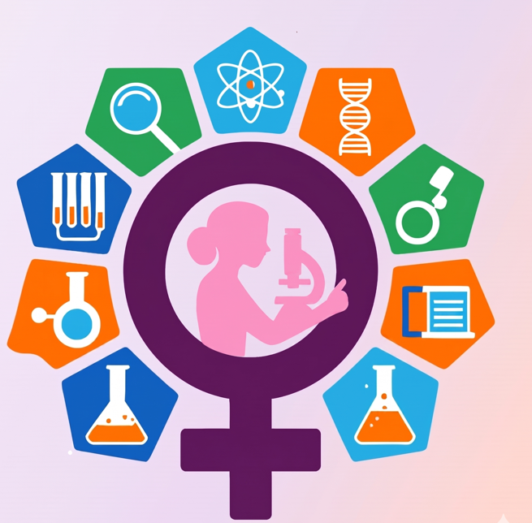
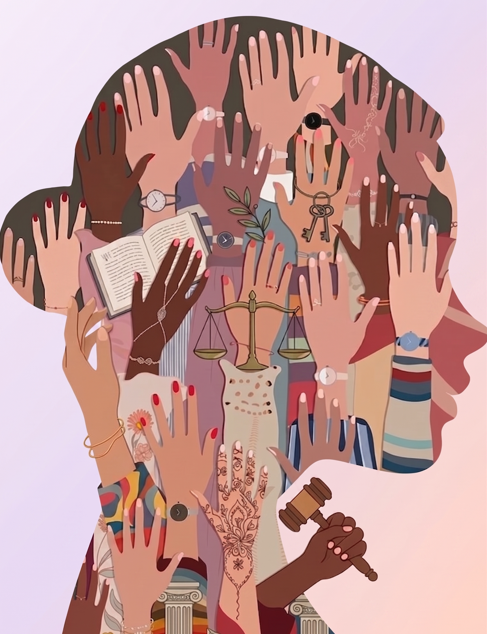

Discover Türkiye’s greatest achievement on its journey towards equality. Click to see how this powerful picture in the classroom has shaped social transformation and to uncover the real gains behind the figures.
EqualDataTürkiye
Data-driven insights into the 2025 Global Gender Gap: Education, Survival, and Power.

Discover Türkiye’s greatest achievement on its journey towards equality. Click to see how this powerful picture in the classroom has shaped social transformation and to uncover the real gains behind the figures.

Analyse Türkiye's position relative to global standards in terms of women's life expectancy, access to healthcare and general well-being indicators. Examine in depth the gender-specific implications of data on life expectancy and quality of health.

Discover the gender gap in political representation and decision-making mechanisms. Examine Türkiye's position in the global index and the data on under-representation in government.